Cygnus X-1 21 –
1: International Centre for Radio Astronomy Research – Curtin University, Perth, Western Australia
6845, Australia
2: Astronomy Department, San Diego State University, San Diego, CA 92182-1221, USA
3: School of Physics and Astronomy, Monash University, Clayton, Victoria 3800, Australia
4: OzGrav: The Australian Research Council Centre of Excellence for Gravitational Wave Discovery,
Australia
5: School of Physics and Astronomy, University of Birmingham, Edgbaston, Birmingham B15 2TT,
United Kingdom
6: Key Laboratory for Computational Astrophysics, National Astronomical Observatories, Chinese
Academy of Sciences, Beijing 100012, China
7: University of Chinese Academy of Sciences, Beijing 100012, China
8: Department of Physics & Astronomy, Texas Tech University, Lubbock, TX 79409-1051,
USA
9: N. Copernicus Astronomical Center, PL-00-716 Warsaw, Poland
10: Center for Astrophysics | Harvard & Smithsonian, Cambridge, MA 02138, USA
11: Anton Pannekoek Institute for Astronomy, University of Amsterdam, 1098 XH Amsterdam, The
Netherlands
12: Korea Astronomy and Space Science Institute, Daejeon 34055, Republic of Korea
13: University of Science & Technology, Daejeon 34113, Republic of Korea
14: International Centre for Radio Astronomy Research – The University of Western Australia,
Crawley, Western Australia 6009, Australia
15: Institut für Astronomie und Astrophysik, Universität Tübingen, 72076 Tübingen, Germany
16: Joint Institute for Very Long Baseline Interferometry European Research Infrastructure
Consortium, 7991 PD Dwingeloo, The Netherlands
17: Gravitation & Astroparticle Physics Physics Amsterdam Institute, University of Amsterdam,
NL-1098 XH Amsterdam, The Netherlands
18: Commonwealth Scientific and Industrial Research Organisation Astronomy and Space Science,
Perth, Western Australia 6102, Australia
19: Observatorio Astronómico Nacional, Instituto Geográfico Nacional, 28014 Madrid,
Spain
20: Department of Physics, Astrophysics, University of Oxford, Oxford OX1 3RH, UK
21: School of Physics and Astronomy, University of Southampton, Southampton SO17 1BJ,
UK
22: Center for Astro, Particle and Planetary Physics, New York University Abu Dhabi, Abu Dhabi,
United Arab Emirates
23: Department of Physics, Centennial Centre for Interdisciplinary Science, University of Alberta,
Edmonton, AB T6G 2E1, Canada
24: East Asian Observatory, Hilo, Hawaii 96720, USA
25: Institute for Space Sciences, 077125 Bucharest-Magurele, Romania
26: Dr. Karl Remeis-Sternwarte and Erlangen Centre for Astroparticle Physics,
Friedrich-Alexander-Universität Erlangen-Nürnberg, 96049, Bamberg, Germany
∗ : james.miller-jones@curtin.edu.au.
. ( ) . Cygnus X-1 2.22−0.17+0.18 . 21.2 ± 2.2 . .
7 50 (M⊙) (1). . 20M⊙ (2). 15.65 ± 1.45M⊙ M33 X-7 (3).
. ( ) . (4) .
Cygnus X-1 (V1357 Cyg S1) 5.6 O. . 1.86−0.11+0.12 kpc (5). 14.8 ± 1.0M⊙ (6). (7). 0.42 ± 0.03 () Gaia (8) ≈ 0.05 mas ( 0.03–0.08 mas (9)) 0.47 ± 0.04 mas. 0.54 ± 0.03 mas (5) Gaia 119 .
29 3 2016 ( ) Cygnus X-1 (VLBA) 8.4 GHz . 0.4∘ Cygnus X-1 (10). . ( 1) (5).
VLBA (5) ( 7.4 ) ( ) . . - Cygnus X-1 (11). O . - O . ( ) . (10).
. ( 2). 58 ± 20 (μas) 0.46 ± 0.04 mas Gaia . (12) 2.22−0.17+0.18 (kpc).
(6). (13) (14) . (15). (21.2 ± 2.2M⊙; . S8) (40.6−7.1+7.7M ⊙). 0.160 ± 0.013 (au) ( 1) 73 ± 8 μ 2.22−0.17+0.18 kpc. VLBA ( 2 S3).
(16). . a∗ > 0.9985 1 (10). (16, 17). 15∘ a ∗ = 0.9696.
Cygnus X-1 ( Eddington ∼ 2 × 10−7 M ⊙ yr−1 Cygnus X-1) (∼ 4 Myr (18)). ( (19)). . ( A (20)) (21). Cygnus X-1 . 9 ± 2 km s−1 ( VLBA (22)) . (6) (23).
(21). (15). 40M⊙ ( (15)) ∼ 105 yr ( ). . ( 3 (10)).
Cygnus X-1 (24) M33 X-7. M33 X-7 (∼ 0.1 Z⊙; (3)). Cygnus X-1 . (15) (10). 21M⊙ ( ) (4) Wolf-Rayet (25, 26). Wolf-Rayet (4) ( ).
. ( Cygnus X-1 ). () (27). ( ).
Cygnus X-1 ( (30)) . (31). Cygnus X-1 .
References
1. B. P. Abbott, et al., Astrophys. J. 882, L24 (2019).
2. J. Casares, P. G. Jonker, Space Science Reviews 183, 223 (2014).
3. J. A. Orosz, et al., Nature 449, 872 (2007).
4. K. Belczynski, et al., Astrophys. J. 714, 1217 (2010).
5. M. J. Reid, et al., Astrophys. J. 742, 83 (2011).
6. J. A. Orosz, et al., Astrophys. J. 742, 84 (2011).
7. J. Ziółkowski, Mon. Not. R. Astron. Soc. 440, L61 (2014).
8. Gaia Collaboration, et al., Astron. & Astrophys. 616, A1 (2018).
9. V. C. Chan, J. Bovy, Mon. Not. R. Astron. Soc. 493, 4367 (2020).
10. Materials and methods are available as supplementary materials.
11. C. Brocksopp, R. P. Fender, G. G. Pooley, Mon. Not. R. Astron. Soc. 336, 699 (2002).
12. T. L. Astraatmadja, C. A. L. Bailer-Jones, Astrophys. J. 832, 137 (2016).
13. C. Brocksopp, A. E. Tarasov, V. M. Lyuty, P. Roche, Astron. & Astrophys. 343, 861 (1999).
14. D. R. Gies, et al., Astrophys. J. 583, 424 (2003).
15. V. V. Shimanskii, et al., Astronomy Reports 56, 741 (2012).
16. L. Gou, et al., Astrophys. J. 742, 85 (2011).
17. R. Duro, et al., Astron. & Astrophys. 589, A14 (2016).
18. A. Bressan, et al., Mon. Not. R. Astron. Soc. 427, 127 (2012).
19. D. M. Russell, R. P. Fender, E. Gallo, C. R. Kaiser, Mon. Not. R. Astron. Soc. 376, 1341 (2007).
20. R. Kippenhahn, A. Weigert, Zeitschrift für Astrophysik 65, 251 (1967).
21. Y. Qin, P. Marchant, T. Fragos, G. Meynet, V. Kalogera, Astrophys. J. 870, L18 (2019).
22. I. F. Mirabel, I. Rodrigues, Science 300, 1119 (2003).
23. V. Grinberg, et al., Astron. & Astrophys. 565, A1 (2014).
24. B. E. Tetarenko, G. R. Sivakoff, C. O. Heinke, J. C. Gladstone, Astrophys. J. 222, 15 (2016).
25. J. R. Hurley, O. R. Pols, C. A. Tout, Mon. Not. R. Astron. Soc. 315, 543 (2000).
26. J. S. Vink, A. de Koter, H. J. G. L. M. Lamers, Astron. & Astrophys. 369, 574 (2001).
27. I. Arcavi, et al., Nature 551, 210 (2017).
28. C. J. Neijssel, et al., Mon. Not. R. Astron. Soc. 490, 3740 (2019).
29. M. Chruslinska, G. Nelemans, Mon. Not. R. Astron. Soc. 488, 5300 (2019).
30. M. C. Miller, J. M. Miller, Phys. Rep. 548, 1 (2015).
31. W. M. Farr, et al., Nature 548, 426 (2017).
32. J. C. A. Miller-Jones, et al., Zenodo 10.5281/zenodo.3961240 (2021).
33. C. Ma, et al., IERS Technical Note 35 (2009).
34. N. Pradel, P. Charlot, J.-F. Lestrade, Astron. & Astrophys. 452, 1099 (2006).
35. J. J. Condon, et al., Astron. J. 115, 1693 (1998).
36. A. T. Deller, et al., Pub. Astron. Soc. Pacific 123, 275 (2011).
37. E. W. Greisen, Information Handling in Astronomy - Historical Vistas, A. Heck, ed. (2003), vol. 285 of Astrophysics and Space Science Library, p. 109.
38. M. J. Reid, et al., Astron. J. 154, 63 (2017).
39. P. Charlot, et al., arXiv e-prints, arXiv:2010.13625 (2020).
40. A. Szostek, A. A. Zdziarski, Mon. Not. R. Astron. Soc. 375, 793 (2007).
41. A. J. Tetarenko, et al., Mon. Not. R. Astron. Soc. 484, 2987 (2019).
42. D. Yoon, S. Heinz, Astrophys. J. 801, 55 (2015).
43. R. Zanin, et al., Astron. & Astrophys. 596, A55 (2016).
44. J. Salvatier, T. V. Wiecki, C. Fonnesbeck, PeerJ Computer Science 2, e55 (2016).
45. R. M. Neal, “MCMC using Hamiltonian dynamics", in Handbook of Markov Chain Monte Carlo, S. P. Brooks, A. Gelman, G. L. Jones, X.-L. Meng, Eds. (Chapman and Hall/CRC Press, 2011), chap. 4
46. M. Betancourt, arXiv e-prints arXiv:1706.01520 (2017).
47. M. D. Hoffman, A. Gelman, ArXiv e-prints p. arXiv:1111.4246 (2011).
48. A. M. Stirling, et al., Mon. Not. R. Astron. Soc. 327, 1273 (2001).
49. Gaia Collaboration, et al., Gaia Early Data Release 3. Summary of the contents and survey properties . Astron. & Astrophys., 10.1051/0004-6361/202039657 (2021).
50. L. Lindegren, et al., arXiv e-prints, arXiv:2012.01742 (2020).
51. X. Luri, et al., Astron. & Astrophys. 616, A9 (2018).
52. A. Rao, et al., Mon. Not. R. Astron. Soc. 495, 1491 (2020).
53. L. Gou, et al., Astrophys. J. 790, 29 (2014).
54. A. Blaauw, Bull. Astron. Inst. Neth. 15, 265 (1961).
55. J. A. Tomsick, et al., Astrophys. J. 780, 78 (2014).
56. M. L. Parker, et al., Astrophys. J. 808, 9 (2015).
57. D. J. Walton, et al., Astrophys. J. 826, 87 (2016).
58. J. A. Tomsick, et al., Astrophys. J. 855, 3 (2018).
59. C. Brocksopp, et al., Mon. Not. R. Astron. Soc. 309, 1063 (1999).
60. S. M. Caballero-Nieves, et al., Astrophys. J. 701, 1895 (2009).
61. J. A. Orosz, P. H. Hauschildt, Astron. & Astrophys. 364, 265 (2000).
62. C. J. F. Ter Braak, Statistics and Computing 16, 239 (2006).
63. A. Herrero, R. P. Kudritzki, R. Gabler, J. M. Vilchez, A. Gabler, Astron. & Astrophys. 297, 556 (1995).
64. J. Ziółkowski, Mon. Not. R. Astron. Soc. 358, 851 (2005).
65. J. E. McClintock, R. Narayan, J. F. Steiner, Space Science Reviews 183, 295 (2014).
66. I. D. Novikov, K. S. Thorne, Black Holes (Les Astres Occlus) (1973), pp. 343–450.
67. J. M. Bardeen, W. H. Press, S. A. Teukolsky, Astrophys. J. 178, 347 (1972).
68. J. E. McClintock, et al., Astrophys. J. 652, 518 (2006).
69. R. Shafee, et al., Astrophys. J. 636, L113 (2006).
70. J. F. Steiner, J. E. McClintock, R. A. Remillard, R. Narayan, L. Gou, Astrophys. J. 701, L83 (2009).
71. K. S. Thorne, Astrophys. J. 191, 507 (1974).
72. X. Zhao, et al., Reestimating the Spin Parameter of the Black Hole in Cygnus X-1, Astrophys. J. accepted (2021).
73. E. R. Higgins, J. S. Vink, Astron. & Astrophys. 622, A50 (2019).
74. J. Puls, et al., Astron. & Astrophys. 454, 625 (2006).
75. J. Puls, J. S. Vink, F. Najarro, Astron. Astrophys. Rev. 16, 209 (2008).
76. J. S. Vink, Philosophical Transactions of the Royal Society of London Series A 375, 20160269 (2017).
77. R. M. Humphreys, K. Davidson, Pub. Astron. Soc. Pacific 106, 1025 (1994).
78. J. S. Vink, A. de Koter, Astron. & Astrophys. 442, 587 (2005).
79. S. Stevenson, et al., Nature Communications 8, 14906 (2017).
80. A. Vigna-Gómez, et al., Mon. Not. R. Astron. Soc. 481, 4009 (2018).
81. N. Mennekens, D. Vanbeveren, Astron. & Astrophys. 564, A134 (2014).
82. J. W. Barrett, et al., Mon. Not. R. Astron. Soc. 477, 4685 (2018).
83. M. Renzo, C. D. Ott, S. N. Shore, S. E. de Mink, Astron. & Astrophys. 603, A118 (2017).
84. A. Maeder, Astron. & Astrophys. 120, 113 (1983).
85. Z. Haiman, A. Loeb, Astrophys. J. 483, 21 (1997).
86. Y. Götberg, S. E. de Mink, J. H. Groh, Astron. & Astrophys. 608, A11 (2017).
87. A. H. Prestwich, et al., Astrophys. J. 669, L21 (2007).
88. J. M. Silverman, A. V. Filippenko, Astrophys. J. 678, L17 (2008).
89. S. Carpano, et al., Astron. & Astrophys. 466, L17 (2007).
90. P. A. Crowther, et al., Mon. Not. R. Astron. Soc. 403, L41 (2010).
91. B. Binder, et al., Astrophys. J. 742, 128 (2011).
92. S. G. T. Laycock, T. J. Maccarone, D. M. Christodoulou, Mon. Not. R. Astron. Soc. 452, L31 (2015).
93. B. Binder, J. Gross, B. F. Williams, D. Simons, Mon. Not. R. Astron. Soc. 451, 4471 (2015).
94. J. Liu, et al., Nature 575, 618 (2019).
95. T. Shenar, et al., Astron. & Astrophys. 639, L6 (2020).
96. M. Abdul-Masih, et al., Nature 580, E11 (2020).
97. J. J. Eldridge, et al., Mon. Not. R. Astron. Soc. 495, 2786 (2020).
98. K. El-Badry, E. Quataert, Mon. Not. R. Astron. Soc. 493, L22 (2020).
99. D. Kushnir, M. Zaldarriaga, J. A. Kollmeier, R. Waldman, Mon. Not. R. Astron. Soc. 462, 844 (2016).
100. M. Zaldarriaga, D. Kushnir, J. A. Kollmeier, Mon. Not. R. Astron. Soc. 473, 4174 (2018).
101. K. Hotokezaka, T. Piran, Astrophys. J. 842, 111 (2017).
102. S. S. Bavera, et al., Astron. & Astrophys. 635, A97 (2020).
103. J. Fuller, L. Ma, Astrophys. J. 881, L1 (2019).
104. K. Belczynski, et al., Astron. & Astrophys. 636, A104 (2020)
105. M. Axelsson, R. P. Church, M. B. Davies, A. J. Levan, F. Ryde, Mon. Not. R. Astron. Soc. 412, 2260 (2011).
106. I. Mandel, S. E. de Mink, Mon. Not. R. Astron. Soc. 458, 2634 (2016).
107. P. Marchant, N. Langer, P. Podsiadlowski, T. M. Tauris, T. J. Moriya, Astron. & Astrophys. 588, A50 (2016).
108. S. L. Schrøder, A. Batta, E. Ramirez-Ruiz, Astrophys. J. 862, L3 (2018).
109. P. Podsiadlowski, S. Rappaport, Z. Han, Mon. Not. R. Astron. Soc. 341, 385 (2003).
110. F. Valsecchi, et al., Nature 468, 77 (2010).
111. T.-W. Wong, F. Valsecchi, T. Fragos, V. Kalogera, Astrophys. J. 747, 111 (2012).
112. C. L. Fryer, et al., Astrophys. J. 749, 91 (2012).
113. G. Israelian, R. Rebolo, G. Basri, J. Casares, E. L. Martín, Nature 401, 142 (1999).
114. P. Podsiadlowski, et al., Astrophys. J. 567, 491 (2002).
115. B. Paxton, et al., Astrophys. J. 192, 3 (2011).
116. R. Kippenhahn, G. Ruschenplatt, H. C. Thomas, Astron. & Astrophys. 91, 175 (1980).
117. H. Braun, N. Langer, Astron. & Astrophys. 297, 483 (1995).
118. C. Neijssel, et al., Wind mass-loss rates of stripped stars inferred from Cygnus X-1, Astrophys. J. accepted (2021).
: . Associated Universities, Inc. . (ESA). Gaia (https://www.cosmos.esa.int/gaia) Gaia (DPAC https://www.cosmos.esa.int/web/gaia/dpac/consortium). DPAC Gaia.: JCAM-J IM (FT140101082 FT190100574 ) . LJG 2016YFA0400804 National NSFC . U1838114 XDB23040100. VG Margarete von Wrangell ESF -Württemberg. BM ía y Competitividad (MINECO) AYA2016-76012-C3-1-P Innovación PID2019-105510GB-C31 CEX2019-000918-M ICCUB (Unidad de Excelencia “María de Maeztu” 2020–2023). SM (NWO) VICI ( 639.043.513). GRS NSERC Discovery Grant (RGPIN-2016-06569). VT Laplas VI . JW Bundesministerium für Wirtschaft und Technologie Deutsches Zentrum für Luft- und Raumfahrt 50 OR 1606. JZ 2015/18/A/ST9/00746. : JCAM-J VLBA . AB . JAO . IM CJN TJM. LG XZha XZhe . JZ . MJRe VLBA . PU VG JCAM-J JW VLBA SM. JCAM-J PU TJM VT APR JW DMR D-YB RD TJ J-SK BM MJRi GRS AJT . . : . : VLBA NRAO ( https://archive.nrao.edu/archive/advquery.jsp/) BR141 BM429. S1. COMPAS http://github.com/TeamCOMPAS/COMPAS. COMPAS https://github.com/bersavosh/CygX-1_JMJ2020 https://zenodo.org/record/3961240 (32).
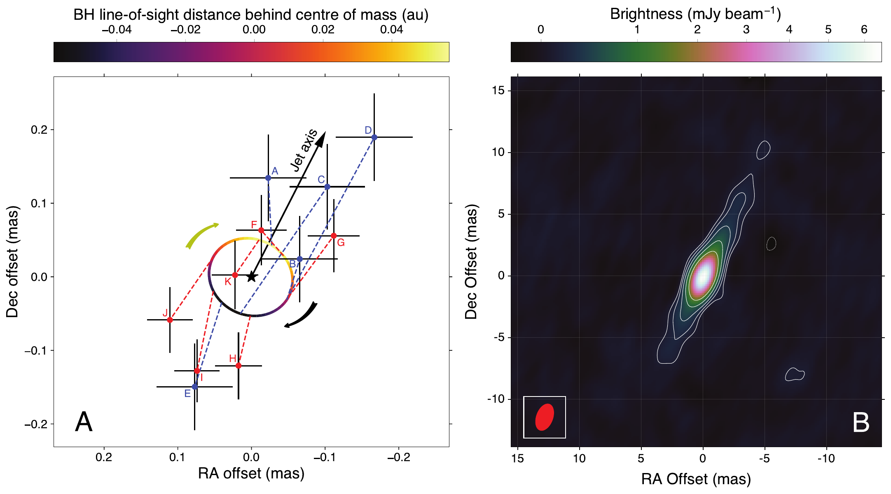
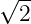
) rms 23 (μJy) . . ( 2). (RA) (Dec) J2000.
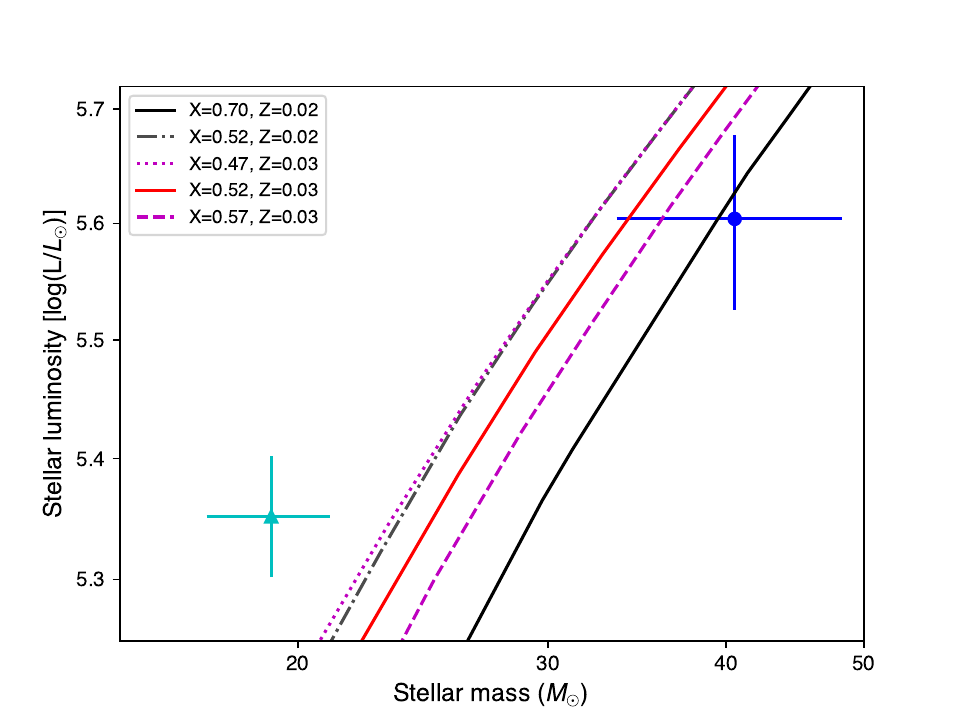
| Parameter | Median | Mode | Lower bound | Upper bound |
| i (deg) | 27.51 | 27.33 | 26.94 | 28.28 |
| e | 0.0189 | 0.0186 | 0.0163 | 0.0217 |
| ω (deg) | 306.6 | 306.3 | 300.3 | 313.1 |
| M1 (M⊙) | 40.6 | 39.8 | 33.5 | 48.3 |
| f1 | 0.960 | 0.999 | 0.930 | 0.988 |
| Teff (K) | 31,138 | 31,158 | 30,398 | 31,840 |
| K1 (km s−1) | 75.21 | 75.18 | 74.80 | 75.63 |
| ϕ | 0.0024 | 0.0023 | 0.0013 | 0.0034 |
| Ωrot | 1.05 | 1.04 | 0.95 | 1.16 |
| MBH (M⊙) | 21.2 | 21.4 | 18.9 | 23.4 |
| R1 (R⊙) | 22.3 | 22.2 | 20.6 | 24.1 |
| log L∕L⊙ | 5.625 | 5.606 | 5.547 | 5.698 |
| log(g1∕cms−2) | 3.348 | 3.351 | 3.335 | 3.360 |
| a (au) | 0.244 | 0.243 | 0.231 | 0.256 |
| a1 (au) | 0.0838 | 0.0840 | 0.0816 | 0.0856 |
| aBH (au) | 0.160 | 0.159 | 0.147 | 0.173 |
PDF
S1 S11
S1 S3
(33-118)
1
VLBA Cygnus X-1 (CHOCBOX) Cygnus X-1 .
1.1
(33) Cygnus X-1 NVSS J195330+353759 ( J1953+3537) NVSS J195740+333827 ( J1957+3338) 1.08∘ 1.57∘ ( S1). J1957+3338 . Cygnus X-1 8.4 GHz Mauna Kea St Croix .
(34) . VLBA 2016 9 44 NVSS (NRAO) (VLA) (35) 30′ Cygnus X-1. 1.64 GHz 44 4 . DiFX (36) . 64 MHz 8 min . Cygnus Mauna Kea St Croix. (NVSS J195754+353513 J1957+3535) 7.7σ (J2000) 19h57m54.s105, +35d35′13.′′02 0.4∘ Cygnus X-1. 2.8 mJy beam−1. .
1.2 VLBA
Cygnus X-1 2016 29 3 VLBA BM429. 5.6 . 8.416 GHz 256 MHz. Cygnus X-1 J1957+3338 J1957+3535 100 60 60 s .
12 hr . .
DiFX (36) 31DEC17 (AIPS (37)). J1957+3338 . J1957+3535. J1957+3338 10 . ( ) J1957+3535. Cygnus X-1 J1957+3535 . 1 S2 .
1.3
Cygnus X-1. 5.6 2009–2010 (5) ( VLBA BR141) . .
1.4
50 μas (ν∕6.7 GHz)−2 ν (38). Cygnus X-1 .
VLBA J1957+3535 . Cygnus X-1 J1957+3535 0.4∘ 23 29 μas RA Dec. (34). (12 ) . 0.4∘ 13 μas .
(5) J1953+3537 J1957+3338 1.08∘ 1.57∘ Cygnus X-1 ( S1). (5) ( ) . (38 47 μas RA Dec. (34)) 34 μas . . Cygnus X-1 S1.
. . J1957+3338 (ICRF3). J1957+3338 19h57m40.s5499147, 33∘38′27.′′943527 96μas RA 323μas Dec ICRF3 (39). ICRF3 151μas RA 181μas Dec. Cygnus X-1( S1 S3) J1957+3535 (10) . 181μas RA 375μas Dec.
1.5
VLBI (5). 2σ 0.18 ± 0.09 au. VLBA ( 1). . ≈ 0.5–5 mas (40, 41) (40, 42).
VLBA (5) . (α0 δ0) (μα cos δ μδ) (π) ( P T0 e i aBH ω Ω). P (13). (6) . (6) ( ) 0.109 (13) (43). T0 (13) .
(MCMC) PYMC3 (44). (HMC; (45, 46)) (NUTS; (47)). i ω (6). i (180∘− i) 90∘ < i < 180∘ VLBA . ω ∗ ωBH ω∗ = ωBH + 180∘. (6) 152.94 ± 0.76∘ 127.6 ± 5.3∘ ω BH (α0 δ0 μα cos δ μδ π aBH). Ω . 64∘. Ω 1∘. S2.
π = 535 ± 28 μas aBH = 89 ± 15 μas ( S3 ). S3 () .
1.6
χ2 1 (5) 80 160 (μas) RA Dec. . (34).
Cygnus X-1 2 GHz (11). . . 8.4 GHz 13.8 ± 2.4% (40) . τ = 1 . τ = 1 .
Cygnus X-1 −26∘ ( 1) (48, 5). . (32). (α 0 δ0) (μα cos δ μδ) . α0 μα cos δ .
π = 458 ± 35 μas ( S4) aBH = 58 ± 20 μas. S3. S5 . . 86 μas ( ). (α0,δ0) S5. 1 2 .
( ) . . 1 2 .
458 ± 35 μas ∼ 470 ± 40 μas (DR2) Gaia (8, 9) 468 ± 15 μas (eDR3; (49, 50)). . 7.7% (51) (12). 2.22 kpc 1σ 2.05–2.40 kpc 90% 1.96–2.54 kpc.
1.7
Cygnus X-1 Cygnus OB3 10.7 ± 2.7 km s−1 (52) (22). 2.0 ± 0.3 kpc Cyg OB3 (52).
Cygnus X-1 (16, 53) Ω. Cygnus X-1 Cygnus OB3 10–20 km s−1. . ∼ 300 km s−1 Blaauw (54) ∼ 10∘. (55, 56, 57) (58).
Ω 15∘. Ω 77 ± 12∘ . 461 ± 35 μas. 63 ± 20 μas 126 ± 5∘ . Ω (0–360∘) Ω 95 ± 18∘ 68% 464 ± 35 μas. 90%. Ω .
1.8
Cygnus X-1 (5) . (6) O O . (59) (14) .
( (60)). O (6) . S6 2.22 ± 0.18 kpc. (6). (15) O .
ELC (61) (DE-MCMC) (62). " D" (6) O . D (6) O. L1 Lagrange. 9 (i,K1,M1,f1,ϕ,e,ω, Ωrot,Teff). (6) .
(6) log g1 = 3.3 (6). (60) . (15, 63, 60, 64) (63) . ( (15, 64, 60)) 30,000–31,000 K ( (60) ). Teff = 30, 200 ± 900 K.
9 Teff 27,500–36,000 K. χ2
χdata2 U B V [ (6) (2)]. Cygnus X-1 O R 1(Teff) V rot sin i = 96 ± 6 km s−1 (60); O 30, 200 ± 900 O log g1 = 3.31 ± 0.05 (15) . 9
Θχ2 = 106 . R 1(Teff) σR1(Teff) . Teff χconstraints2 .
1.9 ELC
DE-MCMC (32). 8 40 . ( (6)) . 2 500 26 000 .
( ) 20 30 . 150 . 200 .
201 . .
S7 1 ( 75) 1σ. .
i f1 ( S7). f1 1.0. 0.963 0.993. 95% 0.917.
40.6−7.1+7.7 M ⊙ 21.2 ± 2.2 M⊙ ( S8) O 19.2 ± 1.9 M⊙ 14.8 ± 1.0 M⊙ (6). O 22.3 ± 1.8 R⊙ Teff = 31.1 ± 0.7 kK log(L∕L⊙) = 5.63−0.08+0.07. S9 S10 . (6) 1.4 .
. . . 20%.
aBH = 0.160 ± 0.013 au 73 ± 8 μas 2.22−0.17+0.18 kpc. (58 ± 20 μas) . VLBA.
1.10
(65) a∗ = cJ∕GMBH2 J c G . R in Novikov-Thorne (66). Rin (ISCO) RISCO. RISCO a∗ 6 GM∕c2 GM∕c2 a ∗ = 0 1. (67). (65).
/ (68, 69) ISCO . Cygnus X-1 / (70) ISCO < 25% . (16, 53) . Cygnus X-1. D M i (53, 32).
( ) (53) a∗ > 0.9985 3σ . a∗ 15∘ ( i = 42.5∘) a∗ = 0.9696.
(71) ISCO. Fe Kα (17, 55, 56, 57, 58). (72).
1.11
Warsaw (64, 32). (7). 30 500 K (15) .
fsw ( (64) (25) (73) . (7) fsw 2 5 ( ). Cygnus X-1. : Ṁ w = −(2.57 ± 0.05) × 10−6 M ⊙ yr−1 (14). O-type (74) . f sw Teff = 30, 500 K (14). 22–47M⊙. fsw 4.15 0.415 log(M∕M⊙) 1.345 1.668.
. (15) X = 0.52 ± 0.05 ( [He∕H] = 0.42 ± 0.05) Z = 0.03 ( (15)). Z = 0.02. . 3. .
1σ Teff = 31, 100 K < 5%. 50% < 3%. .
3 . "" X = 0.70 Z = 0.02 X = 0.52 ( ).
2
2.1
: Wolf-Rayet . Humphreys-Davidson (77). ( )
- - Wolf-Rayet
L (78).
COMPAS (79, 80) Wolf-Rayet (32). Cygnus X-1 Z = 0.02 = 1.4Z⊙ ( Cygnus X-1 (15)). . S11 f
LBVf_WR.Wolf −Rayet1001(4)(Cygnus X1)compas1001(28).Cygnus X1Wolf −Rayet.O(Wolf −Rayet)O.
Cygnus X-1 . Cygnus X-1 Wolf-Rayet . (81, 82) . (83) " " . (84) (85) (86).
2.2
IC10 X-1 (87, 88) NGC 300 X-1 (89, 90, 91) Cygnus X-1. . (92, 93) Wolf-Rayet . IC10 X-1 NGC 300 X-1 Cygnus X-1.
LB-1 (LS V +22 25) 70M⊙ (94). Hα ( (95)) 5M⊙ (96, 97, 98, 95).
2.3
Cygnus X-1. . . (99, 100, 101, 102, 103, 104).
(10). (71) (105) Eddington 4 ( ) a∗ = 0.3. . (106, 107) ∼ 2 . (108) .
(21): . Cygnus X-1 LMC X-1 M33 X-7 ∼ 50R⊙ (30) ( (109, 110, 111) ).
Wolf-Rayet . . (112) s−1 . Cygnus OB3 (22). (10) ∼ 1M⊙ ( ) .
A Wolf-Rayet (15). (109) . GRO J1655-40 (113, 114). Cygnus X-1. ( 3).
. . ( ). Rayleigh-Taylor (116, 117) . ≲ 105 . . ×104 (19) .
(118).
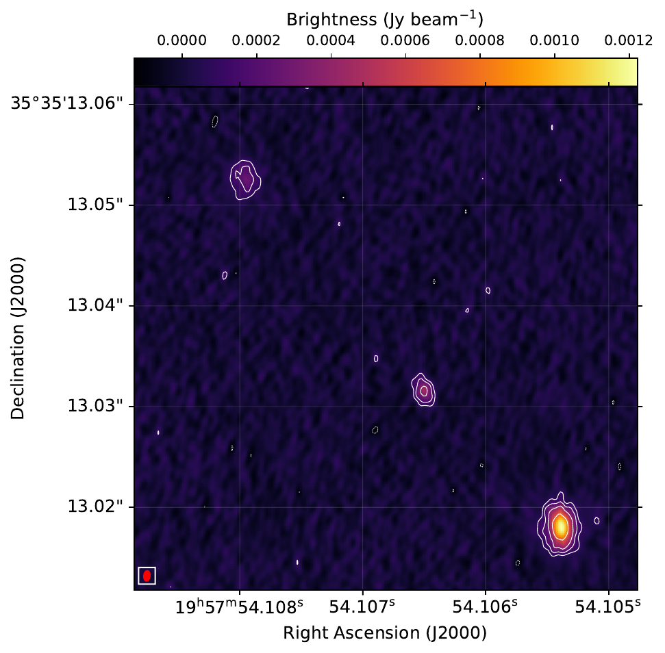
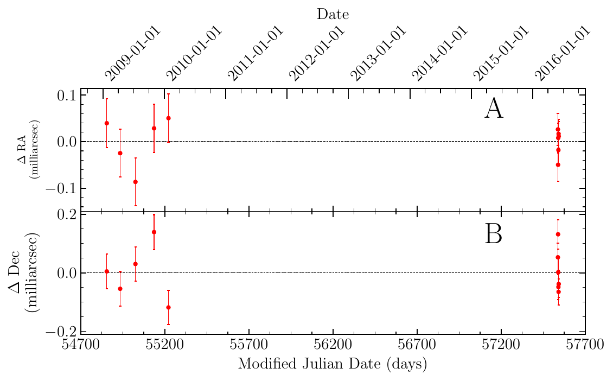
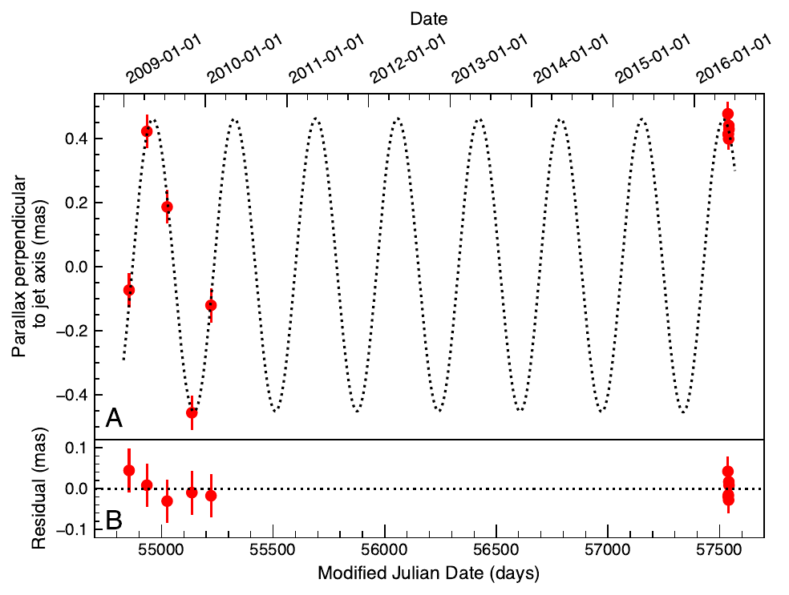
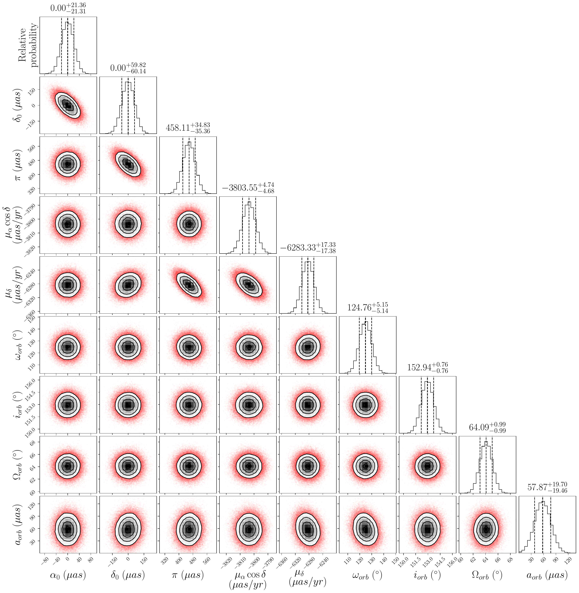
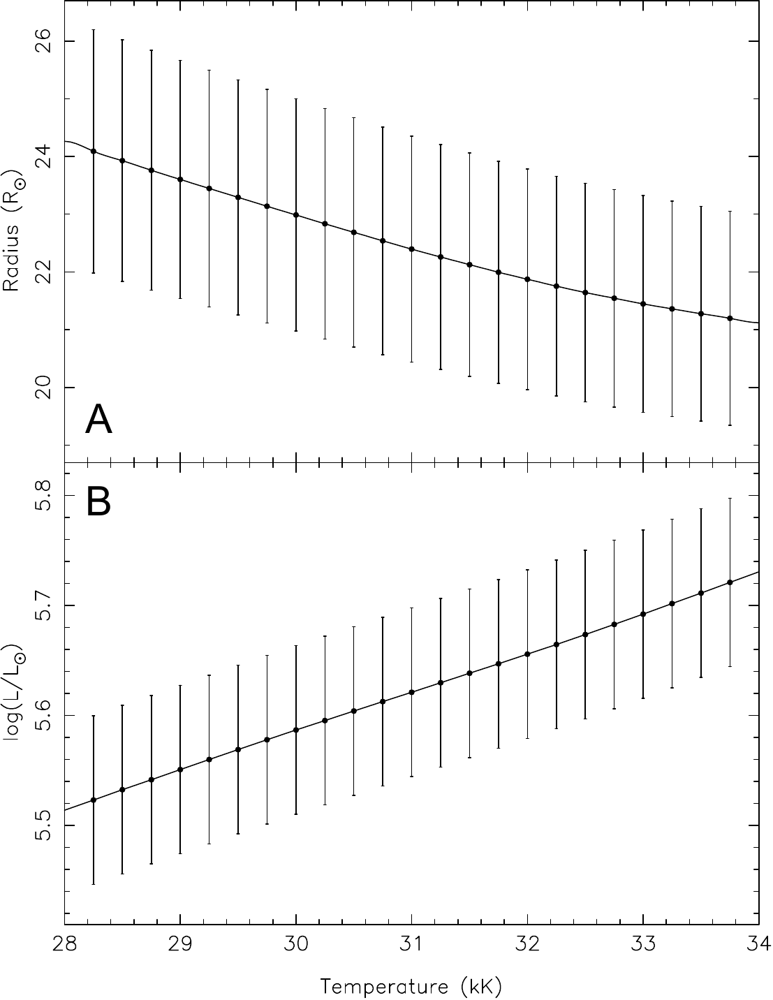
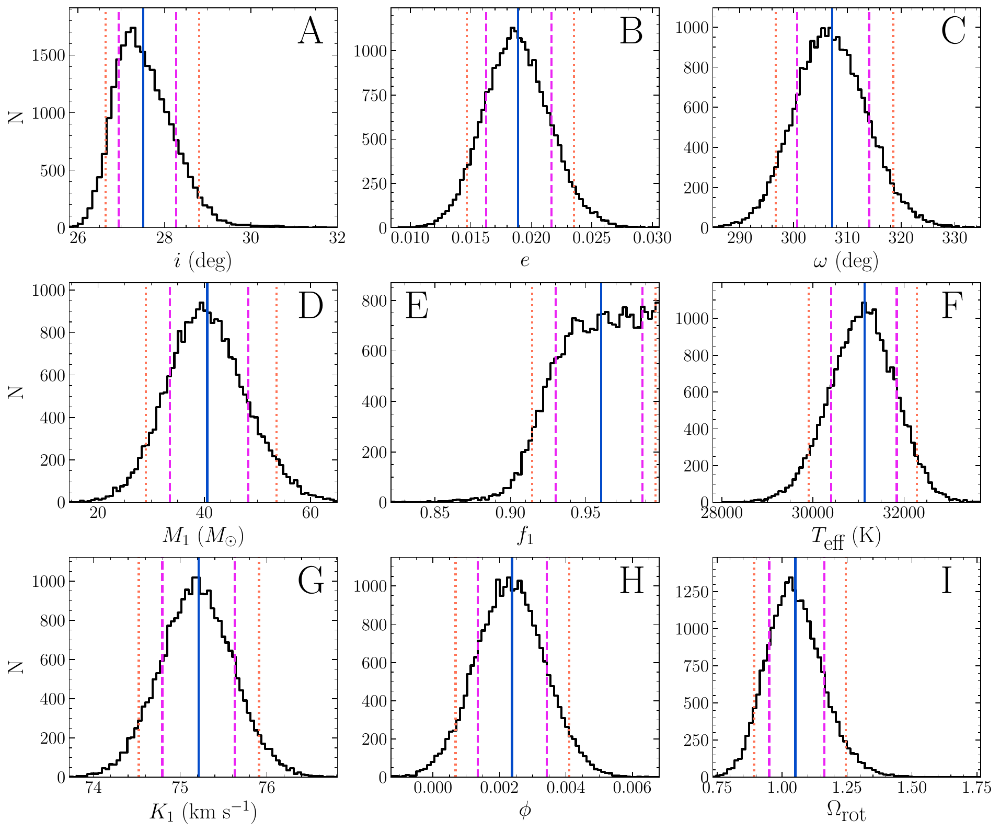
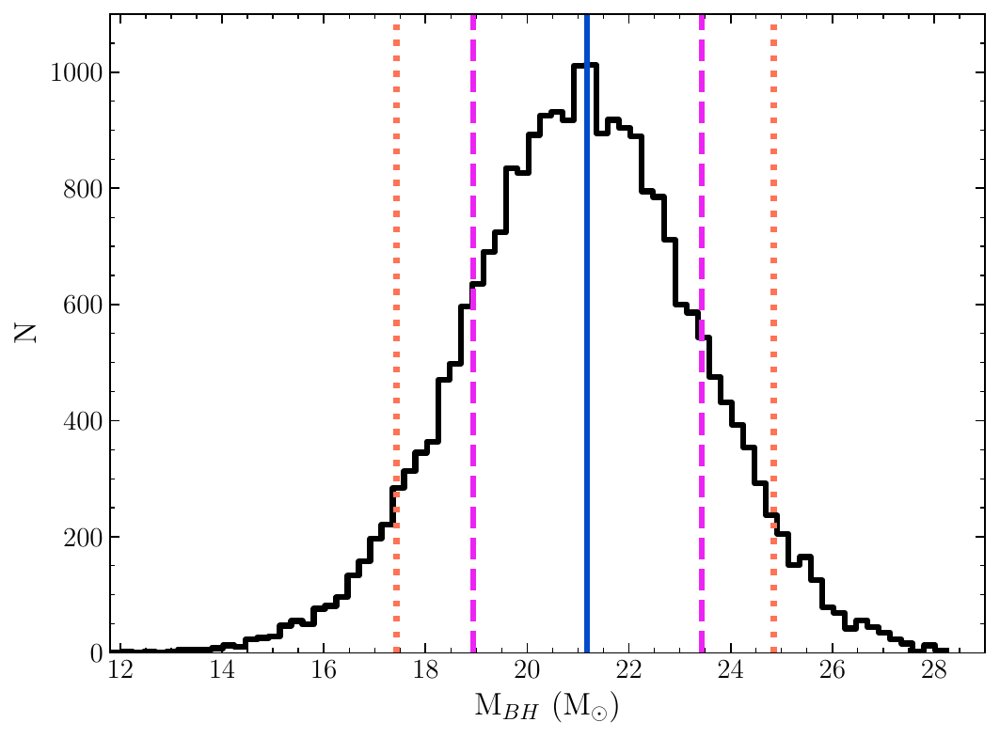
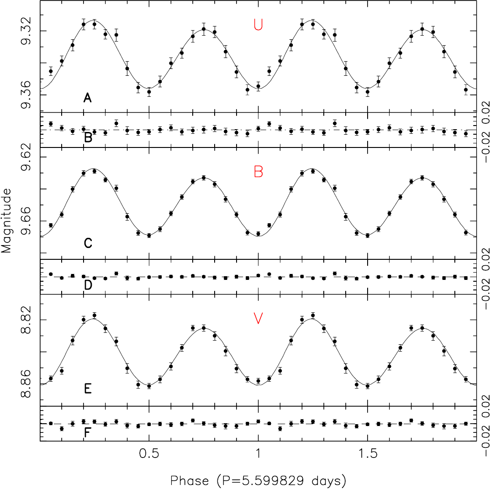
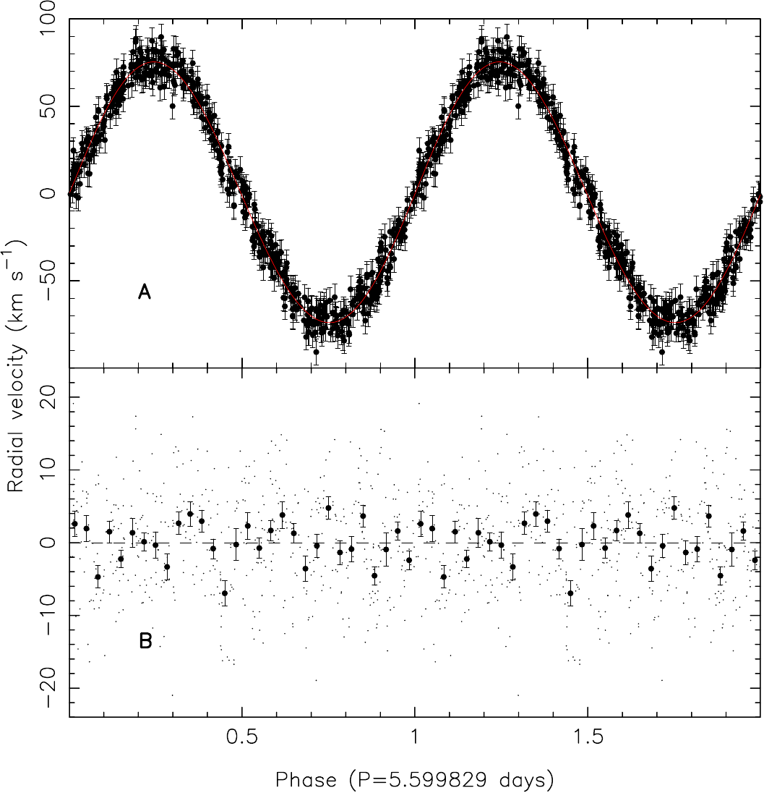
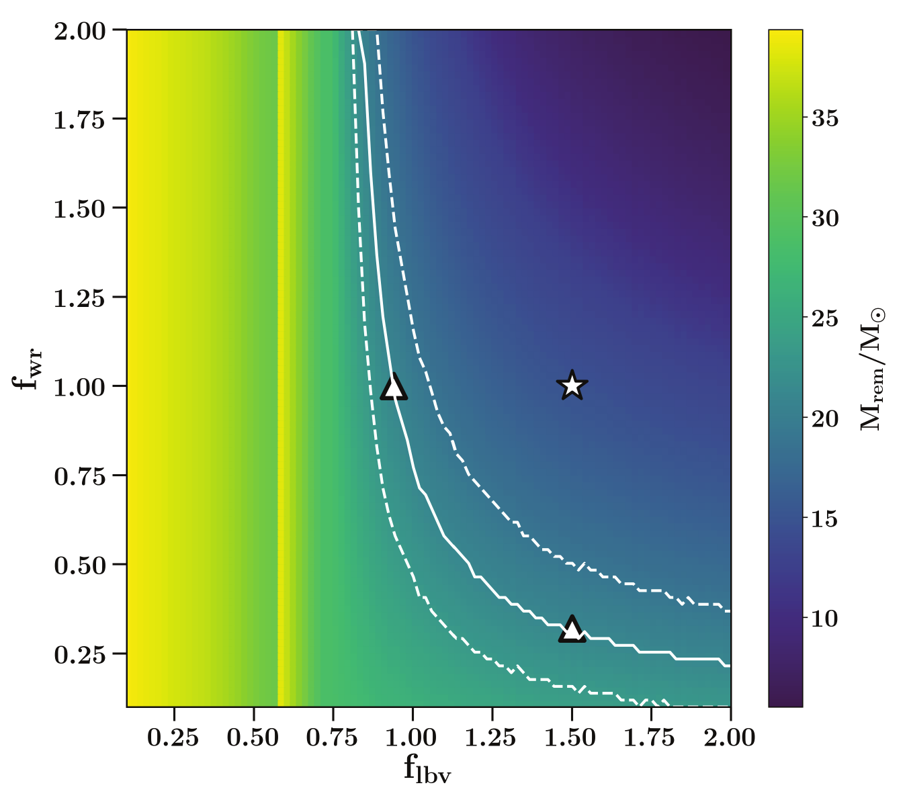
| Epoch | Modified | Right Ascension | Uncertainty | Declination | Uncertainty |
| Julian Date | |||||
| (days) | (μs) | (μas) | |||
| A | 54854.793 | 19h58m21.s6729257 | 4.3 | 35∘12′5.′′728295 | 59 |
| B | 54934.574 | 19h58m21.s6728871 | 4.2 | 35∘12′5.′′727202 | 59 |
| C | 55025.326 | 19h58m21.s6727746 | 4.2 | 35∘12′5.′′726103 | 58 |
| D | 55136.023 | 19h58m21.s6726354 | 4.3 | 35∘12′5.′′723756 | 60 |
| E | 55221.788 | 19h58m21.s6726232 | 4.2 | 35∘12′5.′′721701 | 59 |
| F | 57537.437 | 19h58m21.s6706713 | 2.8 | 35∘12′5.′′682730 | 48 |
| G | 57538.434 | 19h58m21.s6706620 | 2.9 | 35∘12′5.′′682710 | 50 |
| H | 57539.432 | 19h58m21.s6706713 | 2.6 | 35∘12′5.′′682521 | 46 |
| I | 57540.429 | 19h58m21.s6706746 | 2.5 | 35∘12′5.′′682501 | 43 |
| J | 57541.426 | 19h58m21.s6706764 | 2.6 | 35∘12′5.′′682557 | 45 |
| K | 57542.424 | 19h58m21.s6706679 | 2.6 | 35∘12′5.′′682604 | 47 |
| Parameter | Description | Prior distribution | Units |
| α0 | R.A. reference position | 𝒰(−0.2, 0.2)∗ | arcseconds |
| δ0 | Dec. reference position | 𝒰(−0.2, 0.2)∗ | arcseconds |
| μα cos δ | R.A. proper motion | 𝒰(−20, 20) | mas yr−1 |
| μδ | Dec. proper motion | 𝒰(−20, 20) | mas yr−1 |
| π | Parallax | 𝒰(0.1, 0.9) | mas |
| i | Orbital inclination | 𝒩 (μ = 152.94, σ = 0.76)† | degrees |
| ω | Argument of periastron | 𝒩 (μ = 127.6, σ = 5.3)† | degrees |
| Ω | Longitude of ascending node | 𝒩 (μ = 64.0, σ = 1.0)‡ | degrees |
| aBH | BH orbital semimajor axis | 𝒰(0.0, 0.5) | mas |
| Parameter | 2-D fit∗ | 1-D fit† | 1-D fit† | 1-D fit† |
| 5th percentile | 95th percentile | |||
| α0 (19h58m)‡ | 21.s6717793(17) | 21.s6717793(17) | 21.s6717770 | 21.s6717817 |
| δ0 (35∘ 12′)‡ | 5.′′705435(18) | 5.′′705497(60) | 5.′′705399 | 5.′′705597 |
| μα cos δ (mas yr−1) | −3.804(5) | −3.804(5) | −3.801 | −3.796 |
| μδ (mas yr−1) | −6.312(6) | −6.283(17) | −6.312 | −6.254 |
| π (mas) | 0.535(28) | 0.458(35) | 0.399 | 0.516 |
| i (∘)§ | 153.0(8) | 152.9(7) | 151.7 | 154.2 |
| ω (∘) | 118(5) | 125(5) | 116 | 133 |
| Ω (∘) | 64.4(1.0) | 64.1(1.0) | 62.4 | 65.7 |
| aBH (μas) | 89(15) | 58(20) | 25 | 90 |